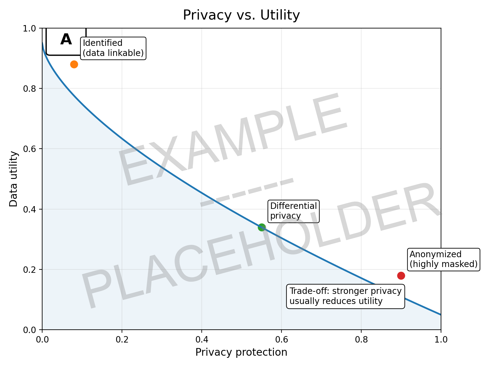
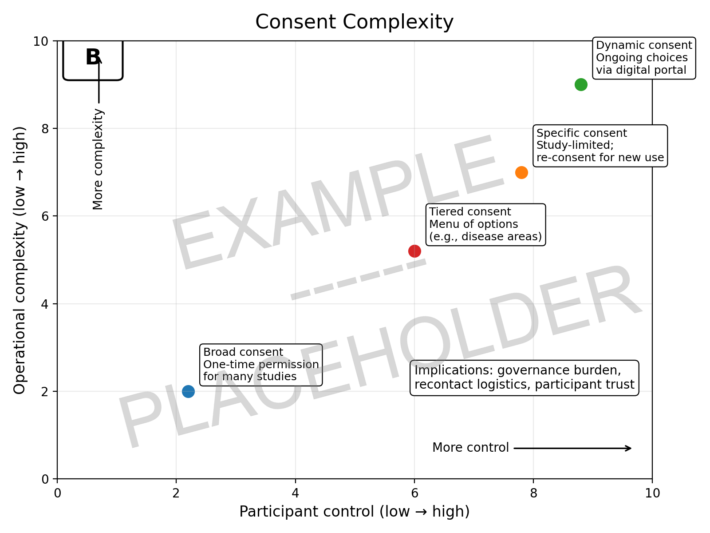
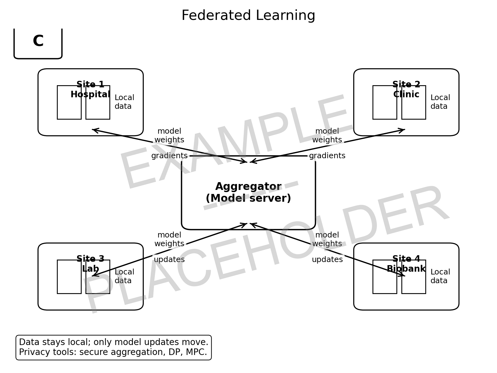
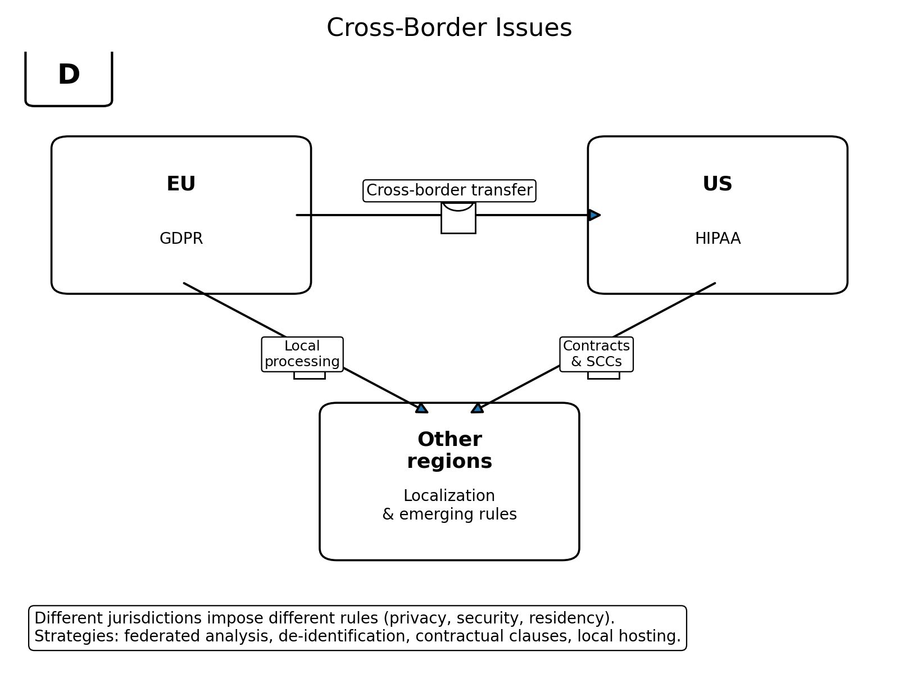
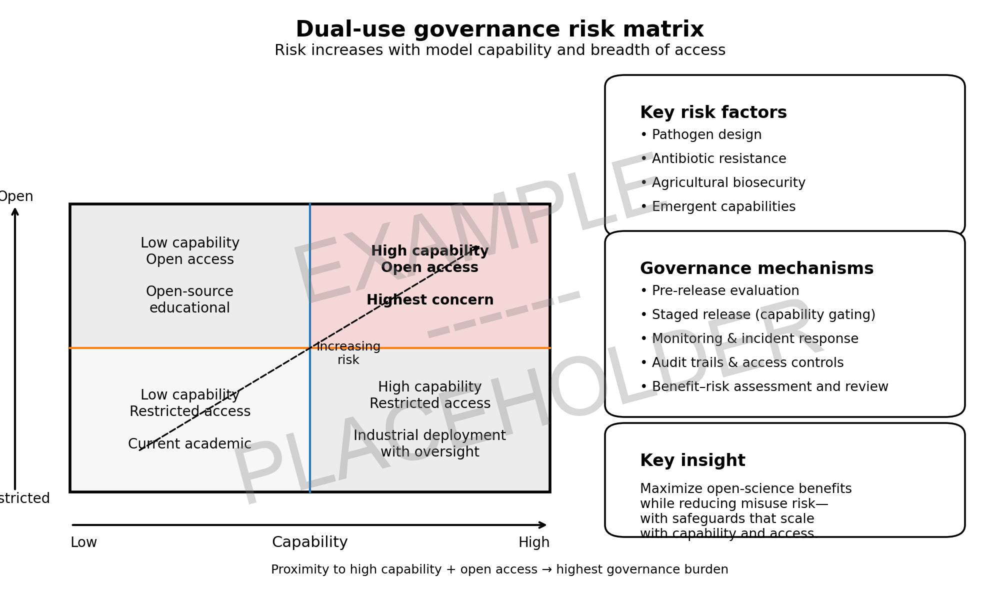
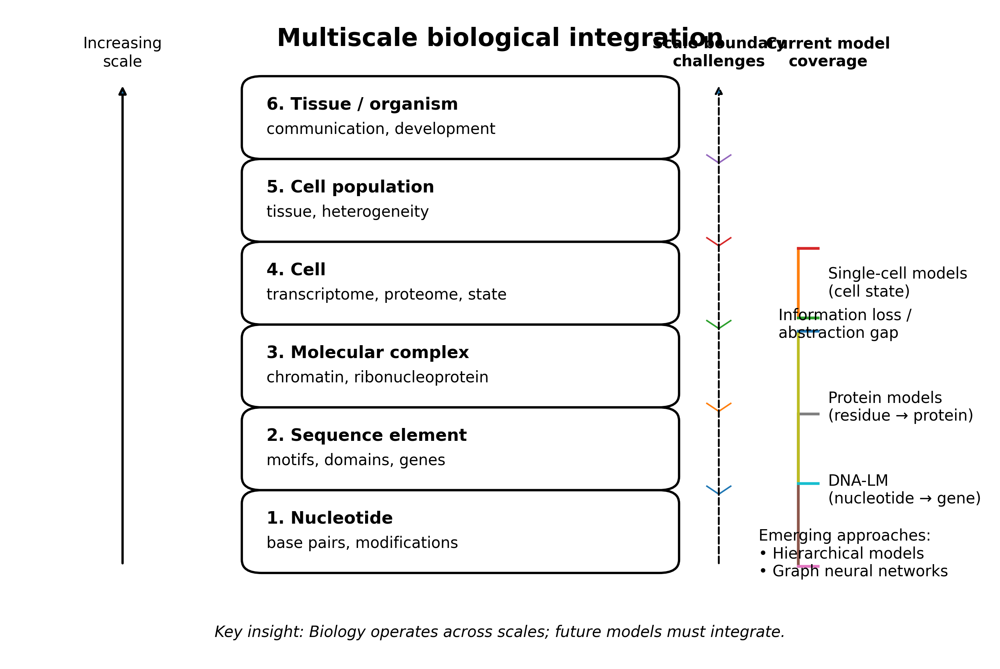
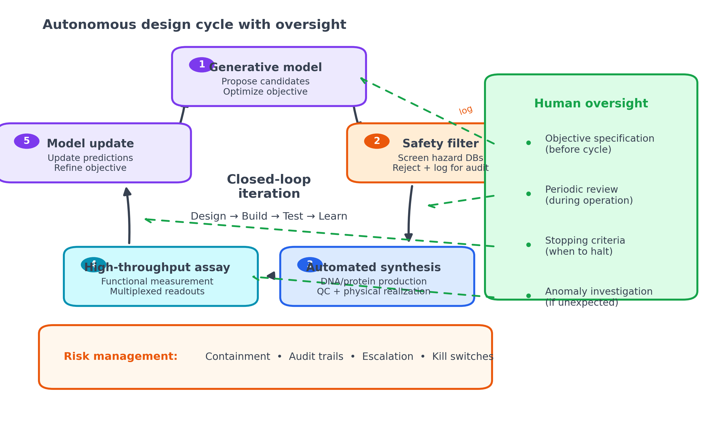
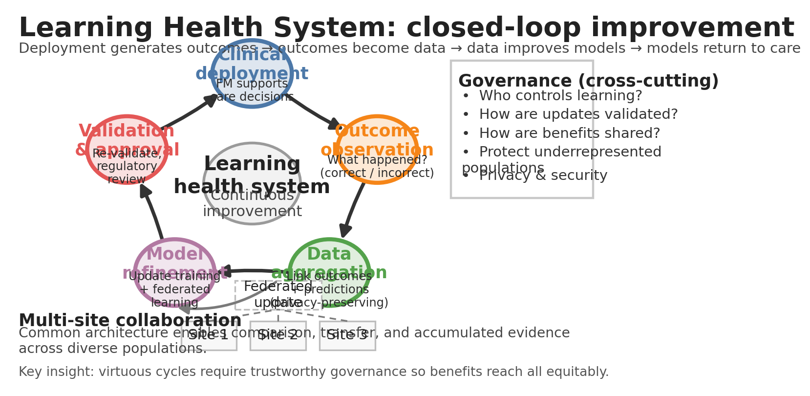

29 Ethics and Frontiers
The first genomic foundation model to receive U.S. Food and Drug Administration (FDA) clearance as a medical device will face a peculiar regulatory challenge: demonstrating that a system trained on millions of sequences from research biobanks, academic databases, and public repositories can safely inform clinical decisions for individual patients who never consented to such use. Clinical-grade variant interpretation tools already incorporate deep learning predictions, yet the regulatory frameworks governing their deployment were designed for deterministic software with traceable decision logic, not for neural networks whose internal representations resist simple explanation. As of 2024, more than 500 AI-enabled medical devices have received FDA authorization, but fewer than a dozen involve genomic interpretation, and none yet deploys a foundation model at scale (Health 2025). The gap between technical capability and regulatory readiness defines one of the central tensions facing the field.
This asymmetry between what models can do in silico and what they may do in clinical practice shapes every translational decision. A variant effect predictor achieving 0.95 area under the receiver operating characteristic curve (auROC) on a curated benchmark may fail unpredictably on the rare variants that matter most for diagnosis. A regulatory sequence model that accurately predicts chromatin accessibility in well-characterized cell lines may produce unreliable predictions in patient-derived tissues never seen during training. Technical achievements in genomic deep learning represent necessary but insufficient conditions for clinical impact. Realizing the benefits of genomic foundation models while managing their risks requires navigating regulatory pathways designed for different technologies, building governance structures for data that spans generations and continents, and confronting ethical questions that genomics and artificial intelligence raise independently but compound when combined.
29.1 Regulatory Frameworks for Genomic AI
Genomic foundation models exist in regulatory limbo. They are clearly software, sometimes medical devices, occasionally laboratory-developed tests, and frequently components of larger systems that span multiple regulatory categories. The frameworks designed for deterministic algorithms struggle with neural networks that learn from data, evolve through fine-tuning, and produce outputs that even their developers cannot fully predict. Navigating this landscape requires understanding how different jurisdictions approach AI-based medical software, what evidence they require, and where genomic applications create novel challenges that existing pathways did not anticipate.
29.1.1 Software as Medical Device Paradigm
Regulatory agencies worldwide classify AI-based clinical tools as software as a medical device (SaMD), a category that applies when software itself constitutes the medical device rather than merely controlling hardware. The International Medical Device Regulators Forum defines SaMD risk tiers based on the seriousness of the health condition and the role software plays in clinical decision-making: software that provides information to drive clinical management of a serious condition receives higher scrutiny than software that merely informs decisions about non-serious conditions (“Software as a Medical Device: Possible Framework for Risk Categorization and Corresponding Considerations International Medical Device Regulators Forum” 2014).
Genomic foundation models typically fall into higher-risk categories. A tool that classifies variants as pathogenic or benign directly influences diagnostic conclusions for conditions ranging from hereditary cancer syndromes to rare developmental disorders. The consequences of misclassification can be severe: a false negative may delay life-saving interventions, while a false positive may trigger unnecessary prophylactic surgery or cascade into family-wide psychological harm. Regulators accordingly require substantial evidence across the ACCE framework: analytical validity (does the model measure what it claims to measure?), clinical validity (does measurement correlate with the clinical outcome?), and in some cases clinical utility (does using the model improve patient outcomes?) (“ACCE Model Process for Evaluating Genetic Tests CDC” 2004).
The FDA’s approach to AI-enabled devices has evolved considerably since the first autonomous diagnostic AI received FDA clearance in 2018 (Abràmoff et al. 2018). The agency now distinguishes between “locked” algorithms whose behavior is fixed at approval and “adaptive” algorithms that continue learning from new data after deployment (Administration 2021). Most foundation models fall into neither category cleanly: their weights are frozen after pretraining, but their outputs depend on prompts, fine-tuning, or downstream heads that may change across applications. This architectural ambiguity creates regulatory uncertainty. A foundation model serving as the backbone for multiple clinical applications might require separate submissions for each use case, or a single submission might cover the shared backbone while individual fine-tuned heads receive separate clearances.
29.1.2 European and Global Regulatory Landscapes
The European Union’s approach differs from the FDA’s in several respects relevant to genomic AI. The EU Medical Device Regulation (MDR), which fully replaced prior directives in 2021, classifies standalone software according to similar risk principles but places greater emphasis on conformity assessment by notified bodies rather than centralized agency review (“Regulation (EU) 2017/745 of the European Parliament and of the Council of 5 April 2017 on Medical Devices, Amending Directive 2001/83/EC, Regulation (EC) No 178/2002 and Regulation (EC) No 1223/2009 and Repealing Council Directives 90/385/EEC and 93/42/EEC (Text with EEA Relevance. )” 2017). For high-risk software, manufacturers must demonstrate compliance with essential safety and performance requirements through technical documentation, quality management systems, and post-market surveillance plans. The AI Act, which entered force in 2024, adds another regulatory layer: high-risk AI systems (including those used in medical diagnosis) must meet transparency, robustness, and human oversight requirements that go beyond device-specific regulations (“Regulation (EU) 2024/1689 of the European Parliament and of the Council of 13 June 2024 Laying down Harmonised Rules on Artificial Intelligence and Amending Regulations (EC) No 300/2008, (EU) No 167/2013, (EU) No 168/2013, (EU) 2018/858, (EU) 2018/1139 and (EU) 2019/2144 and Directives 2014/90/EU, (EU) 2016/797 and (EU) 2020/1828 (Artificial Intelligence Act) (Text with EEA Relevance)” 2024).
Regulatory divergence across jurisdictions creates practical challenges for global deployment. A genomic foundation model cleared by the FDA may require separate CE marking for European markets, TGA approval in Australia, and PMDA review in Japan, each with distinct evidentiary standards and submission formats. Harmonization efforts through the International Medical Device Regulators Forum provide common frameworks for definitions and risk classification, but substantive requirements continue to differ (“Software as a Medical Device (SaMD): Clinical Evaluation International Medical Device Regulators Forum” 2017). Companies developing clinical-grade genomic AI must either design validation programs that satisfy the most stringent jurisdiction or pursue market-by-market strategies that delay access in some regions.
The regulatory landscape for laboratory-developed tests (LDTs) further complicates matters in the United States. Clinical laboratories have historically been able to develop and offer tests under their own validation without FDA premarket review, relying instead on CLIA certification and state licensure. Many clinical genomics laboratories use in-house bioinformatics pipelines, variant callers, and annotation tools that incorporate machine learning components without seeking FDA clearance. Recent FDA guidance signals intent to assert greater oversight over LDTs, particularly those using complex algorithms, but the boundary between regulated devices and unregulated laboratory procedures remains contested (“Medical Devices; Laboratory Developed Tests” 2024).
29.1.3 Validation Requirements for Clinical Genomic AI
Regulatory submissions for genomic AI devices require validation evidence spanning multiple dimensions. Analytical validation typically involves demonstrating that the model performs consistently across different sequencing platforms, library preparation methods, and sample types. For a variant effect predictor, this might include showing that scores remain calibrated when inputs come from whole-genome sequencing versus targeted panels, from fresh blood versus archived FFPE tissue, or from healthy individuals versus cancer patients with complex somatic variation.
Clinical validation connects model outputs to clinical outcomes. For a variant classifier, clinical validation might assess concordance with expert panel classifications, correlation with functional assay results, or agreement with segregation patterns in affected families. The choice of reference standard is itself contentious: ClinVar classifications, which many models use as training labels, reflect historical expert consensus that may lag behind accumulating evidence, and circular validation using the same database for training and evaluation produces misleadingly optimistic results (see Chapter 22). The deployment realities discussed in Section 25.6.4 and Appendix B illustrate how these validation requirements interact with institutional workflows, reimbursement constraints, and clinician trust; regulatory clearance represents only one barrier among many.
Some regulators also require evidence of clinical utility, demonstrating that model use improves patient outcomes compared to standard practice. This higher bar is difficult to meet for genomic AI tools that operate as components within larger clinical workflows. A variant effect predictor may improve prioritization efficiency without changing ultimate diagnoses, or may enable earlier diagnosis that only translates to better outcomes when appropriate treatments exist. Designing trials that isolate the model’s contribution from confounding workflow factors requires careful attention to study design and endpoint selection.
29.2 Data Governance and Consent
Foundation models require training data at scales that strain every assumption underlying informed consent. A protein language model draws on sequences from millions of organisms. A human genomic model aggregates variants from biobanks across continents, each governed by different consent frameworks, legal regimes, and cultural expectations about data use. The participants who contributed samples a decade ago could not have anticipated that their sequences might train generative AI systems capable of designing novel proteins or predicting sensitive traits. Governing this data requires frameworks that balance scientific utility against individual rights, present uses against unknown future applications, and open science norms against community concerns about exploitation.
29.2.1 Consent Problem at Scale
Foundation model training requires data at scales that challenge traditional consent paradigms. A protein language model trained on UniRef encompasses sequences from millions of organisms, including many species for which consent concepts do not apply and human sequences contributed under varied research protocols. A model trained on human genomic data from multiple biobanks aggregates information collected under different consent frameworks, some permitting broad secondary research use and others restricting use to specific studies.
The legal and ethical status of such aggregated training depends on how consent documents were written, how thoroughly participants understood the scope of future use, and how jurisdictions interpret secondary use provisions. GDPR provisions treat genetic data as a special category requiring explicit consent, but may permit research use under legitimate interest or public interest provisions with appropriate safeguards (“Regulation (EU) 2016/679 of the European Parliament and of the Council of 27 April 2016 on the Protection of Natural Persons with Regard to the Processing of Personal Data and on the Free Movement of Such Data, and Repealing Directive 95/46/EC (General Data Protection Regulation) (Text with EEA Relevance)” 2016). United States regulations under the Common Rule permit secondary research on properly deidentified data, but genomic data resist complete deidentification given the uniqueness of individual genomes (“Federal Policy for the Protection of Human Subjects (’Common Rule” 2009).
Even when consent technically permits model training, broader ethical questions remain. Participants who consented to genomic research in 2005 could not have anticipated that their data might train AI systems capable of generating novel sequences or predicting sensitive traits. The temporal gap between data collection and model development strains the fiction of informed consent. Dynamic consent systems that allow ongoing engagement and preference updates address some concerns but are difficult to retrofit onto legacy collections and impose burdens on participants and institutions alike (Kaye et al. 2015).
29.2.2 Biobank Governance Models
Large biobanks have developed varied governance approaches that shape how their data can be used for foundation model development. UK Biobank, which combines genomic data with extensive phenotypic information on approximately 500,000 participants, permits registered researchers to use data for health-related research under terms that explicitly anticipate computational and AI applications (Sudlow et al. 2015; Bycroft et al. 2018). Access requires application review, data security commitments, and agreement to publish results. The model has enabled substantial foundation model research while maintaining participant trust through transparent policies and active communication.
Other biobanks operate under more restrictive frameworks. Some disease-specific registries limit use to research on particular conditions. Some indigenous and community biobanks require tribal or community approval for research access, reflecting concerns about historical exploitation and the importance of data sovereignty. The tension between open science norms that favor broad data sharing and community governance norms that prioritize local control creates friction for foundation model developers seeking diverse training data.
Federated learning and other privacy-preserving techniques offer partial solutions by enabling model training without centralizing raw data (Rieke et al. 2020). Under federated approaches, each data custodian trains local models that share only gradients or model updates with a central coordinator. The approach protects against centralization risks but introduces technical complexity, may reduce model quality compared to centralized training, and does not eliminate all privacy risks. Zhu et al. demonstrated that gradient updates can sometimes reveal individual-level information through reconstruction attacks (Zhu, Liu, and Han 2019). Practical federated training for genomic foundation models remains an active research area with limited deployment experience.
29.2.3 Secondary Use and Data Futures
The genomic data collected today may be used for applications not yet imagined. A variant database assembled for pharmacogenomic research might later inform ancestry inference tools with implications for immigration enforcement. Chromatin accessibility data generated for cancer biology might reveal aging signatures relevant to insurance underwriting. Foundation models trained on diverse genomic data acquire emergent capabilities that their creators did not anticipate and may not recognize.
Governance structures must therefore address not just present uses but future possibilities. Some institutions adopt broad consent models that authorize essentially unlimited research use, relying on institutional review and public benefit assessments rather than individual authorization for each application. Others implement tiered consent allowing participants to authorize some uses while restricting others. Still others propose data trusts or cooperatives that hold data on participants’ behalf and negotiate access terms collectively.
No consensus has emerged on optimal governance structures for genomic foundation model development. The field operates within a patchwork of institutional policies, national regulations, and community norms that permit some training configurations while prohibiting others. Researchers building foundation models must navigate this landscape carefully, documenting data provenance, respecting access restrictions, and anticipating how governance norms may evolve as AI capabilities advance.
29.3 Privacy and Genomic Data
Genomes are simultaneously the most personal data and the most shareable. A genome uniquely identifies its owner, reveals information about disease risk and ancestry, and exposes details about biological relatives who never consented to any disclosure. Standard anonymization techniques fail because the genome itself is an identifier. Foundation models compound these challenges by potentially memorizing and recombining information in ways that defeat conventional privacy protections. The technical solutions, from differential privacy to federated learning, each involve tradeoffs between utility and protection that genomic applications make particularly acute.




29.3.1 Re-identification Challenge
Genomic data pose fundamental privacy challenges because genomes are simultaneously unique identifiers and richly informative biological records. A person’s genome can be matched against public genealogy databases, research repositories, or forensic databases to establish identity with high confidence. Once identified, the genomic record reveals information about disease predisposition, ancestry, family relationships, and other sensitive attributes that the person may not wish to disclose.
Conventional anonymization techniques that remove names and obvious identifiers provide limited protection. Re-identification of individuals from genomic data combined with surname inference through Y-chromosome analysis has been demonstrated (Gymrek et al. 2013) Subsequent work has shown re-identification from aggregate genomic statistics under certain conditions and through membership inference attacks on genomic databases (Homer et al. 2008; Erlich and Narayanan 2014). Foundation models compound these concerns by potentially extracting and recombining information in ways that defeat simple deidentification. A model trained on sequences from many individuals might, under adversarial prompting, generate outputs that reveal information about specific training examples.
Technical safeguards include differential privacy (which adds calibrated noise to training procedures to bound individual-level information leakage), secure multi-party computation (which enables joint computation over distributed data without revealing inputs), and synthetic data generation (which produces training data that preserves statistical properties without corresponding to real individuals). Each approach involves tradeoffs between privacy protection and model utility. Differential privacy with strong guarantees may degrade model performance substantially. Secure computation adds computational overhead and complexity. Synthetic data may fail to capture rare variants or unusual correlations essential for clinical applications.
29.3.2 Family and Relational Privacy
Genomic privacy extends beyond individuals to families and communities. A person’s genome reveals information about biological relatives who may not have consented to any data collection. Identifying a carrier of a hereditary cancer mutation implies elevated risk for parents, siblings, and children. Revealing ancestry information for one family member constrains inferences about relatives. These relational dimensions mean that individual consent cannot fully protect the interests of those affected by genomic disclosure.
Foundation models trained on family data, or capable of inferring family relationships from population-level patterns, create new relational privacy risks. A model that accurately predicts recessive disease carrier status from sequence alone could identify at-risk couples without explicit testing. A model that infers extended pedigree structure from population genetics signals could reveal family secrets or create legal complications. Governance frameworks must consider not just the rights of data subjects but the interests of biological relatives who cannot meaningfully consent.
Some jurisdictions have begun addressing relational genomic privacy through legislation. The Genetic Information Nondiscrimination Act (GINA) in the United States prohibits health insurers and employers from using genetic information discriminatorily, providing partial protection for individuals whose relatives have been tested (“Genetic Information Nondiscrimination Act of 2008” n.d.). GDPR provisions on special category data extend some protections to inferred genetic information (“Regulation (EU) 2016/679 of the European Parliament and of the Council of 27 April 2016 on the Protection of Natural Persons with Regard to the Processing of Personal Data and on the Free Movement of Such Data, and Repealing Directive 95/46/EC (General Data Protection Regulation) (Text with EEA Relevance)” 2016). But legal frameworks lag behind technical capabilities, and enforcement mechanisms remain limited.
29.4 Intellectual Property and Ownership
Who owns a genome sequence? Who owns a prediction derived from it? Who owns the model weights that encode patterns learned from millions of sequences? These questions lack clear answers, and the uncertainty shapes every decision about data sharing, model release, and commercial deployment. Legal frameworks designed for physical inventions and traditional software fit poorly with foundation models that blur boundaries between data, algorithm, and output. The genomics community’s historical commitment to open science confronts new tensions when model weights represent millions of dollars in compute investment and potentially enable misuse.
29.4.1 Genomic Data Ownership
Legal frameworks for sequence data ownership vary across jurisdictions and remain contested. In the United States, the Supreme Court’s 2013 Myriad decision held that naturally occurring DNA sequences cannot be patented, eliminating one barrier to data sharing but leaving property rights in datasets unclear (“Assoc. For Molecular Pathology v. Myriad Genetics, Inc., 569 U.S. 576 (2013)” n.d.). Databases may receive limited copyright protection for their selection and arrangement, but individual sequences typically cannot be copyrighted as facts or natural phenomena. Contractual restrictions, such as data use agreements attached to biobank access, provide the primary mechanism for controlling sequence data use.
The situation differs for synthetic or engineered sequences, which may qualify for patent protection if they meet novelty, utility, and non-obviousness requirements. Foundation models that generate novel sequences thus operate in complex IP territory: sequences generated by the model may be patentable if sufficiently innovative, but determining inventorship (human researcher versus AI system) raises unresolved legal questions (LORD JUSTICE ARNOLD<br>LADY JUSTICE ELISABETH LAING<br>and<br>LORD JUSTICE BIRSS 2021). Courts and patent offices are only beginning to address AI-generated inventions, with varying approaches across jurisdictions.
For foundation model developers, the key practical questions concern what restrictions apply to training data and what rights attach to model outputs. Training on publicly available sequences may be permissible under database terms of use, research exemptions, or fair use principles depending on jurisdiction and use context. Commercial deployment of models trained on restricted-access data may require additional authorization. Outputs generated by models may be freely usable by the model operator, or may carry through restrictions from training data, depending on legal interpretation and contractual provisions.
29.4.2 Model Weights as Assets
Foundation model weights represent substantial investments of compute, data, and expertise, creating obvious commercial value. Companies training large genomic models face decisions about whether to release weights openly, provide API access without weight release, or restrict access entirely. Each approach carries different implications for scientific progress, commercial competition, and safety management.
Open release of weights enables independent research, reproduction, and adaptation but forfeits commercial control and complicates responsibility for misuse. API access maintains control while enabling broad use but creates dependencies and may restrict scientific scrutiny. Restricted access protects competitive advantage and may enhance safety oversight but limits beneficial applications and concentrates power.
The genomics community has historically favored open data sharing, with major databases and biobanks making data freely available under permissive terms. Whether this norm extends to foundation model weights is contested. Arguments for openness emphasize scientific reproducibility, broad access benefits, and the difficulty of maintaining meaningful restrictions given technical capabilities for weight reconstruction or distillation. Arguments for restriction emphasize dual-use risks from highly capable generative models, commercial incentives necessary to sustain development investment, and the potential for open models to be fine-tuned for harmful purposes.
29.4.3 Prediction Ownership and Liability
When a foundation model generates a clinically relevant prediction (this variant is likely pathogenic, this regulatory sequence will increase expression), questions arise about who owns that prediction and who bears responsibility if it proves wrong. The model developer, the clinical laboratory using the model, the health system employing the laboratory, and the clinician acting on results all have potential roles and potential liability.
Current legal frameworks generally hold clinicians responsible for clinical decisions, with laboratories liable for test quality and medical device manufacturers liable for product defects. How these responsibilities apply when decisions incorporate foundation model outputs remains uncertain. If a model developer provides a variant classifier as SaMD, the developer likely bears some responsibility for the classifier’s performance. If a laboratory integrates foundation model embeddings into a proprietary pipeline, the laboratory may assume primary responsibility for overall system performance. If a clinician overrides a model recommendation based on clinical judgment, liability may shift toward the clinician’s decision-making.
These liability questions have practical implications for foundation model deployment. Developers may structure their offerings to minimize liability exposure, for instance by providing research-use-only tools that shift responsibility to users, or by limiting outputs to information that falls short of clinical recommendations. Such structuring may impede beneficial clinical applications if it creates uncertainty about appropriate use or fragments responsibility in ways that leave harms uncompensated.
29.5 Responsible Development Practices
Technical capability without responsible deployment causes harm. A foundation model that achieves excellent benchmark performance but fails silently on underrepresented populations widens health disparities. A tool that provides confident predictions without communicating uncertainty misleads clinicians. A system deployed without documentation leaves users unable to assess whether its outputs apply to their context. Responsible development encompasses the entire lifecycle from training data selection through deployment and monitoring, requiring attention to transparency, fairness, and human oversight at each stage.
29.5.1 Transparency and Documentation
Responsible foundation model development requires transparency about training data, model capabilities, limitations, and intended use. Model cards and datasheets provide structured approaches to capturing this information (Mitchell et al. 2019; Gebru et al. 2021). For genomic foundation models, relevant documentation includes:
Training data composition encompasses which species are represented, what genomic regions are covered, which populations contribute human data, what functional annotations are included, and how data were filtered or preprocessed. Data provenance documentation traces sources, access conditions, and any restrictions on use or redistribution. Evaluation results cover performance across relevant benchmarks, disaggregated by ancestry, variant type, gene family, and other relevant strata. Limitation disclosure identifies known failure modes, out-of-distribution detection capabilities, and contexts where model outputs should not be trusted.
The challenge is ensuring that documentation reaches users who need it and influences their decisions. A detailed model card published alongside model weights may be ignored by users seeking quick results. Clinical deployments may strip away documentation as models are integrated into larger systems. Effective transparency requires not just producing documentation but designing workflows that surface relevant information at decision points and verifying that users understand limitations.
29.5.2 Fairness and Performance Equity
Ancestry bias manifests technically at every stage of the genomic AI pipeline. Polygenic scores derived from European-ancestry GWAS show 40 to 75 percent reductions in prediction accuracy for African-ancestry individuals (Section 3.7). Variant effect predictors trained on ClinVar inherit that database’s overrepresentation of European-ancestry variants, performing better for populations already well-served by genomic medicine (Section 14.2; Section 2.8.1). Models can exploit ancestry as a confounding shortcut, achieving high benchmark performance while systematically underperforming for underrepresented groups (Section 22.2.1). Clinical risk models calibrated on single-institution data may provide inferior risk stratification to patients from populations or care settings not represented in development (Section 25.8). These are not independent problems but manifestations of a single structural issue: genomic datasets encode historical inequities in who gets sequenced, which populations are recruited into biobanks, and whose variants receive clinical characterization.
Technical solutions exist but require deliberate implementation. Ancestry-stratified evaluation mandates reporting performance separately for major population groups, not just aggregate metrics that obscure disparities. Calibration assessment by subgroup reveals when models systematically over- or under-estimate risk for specific populations. Uncertainty quantification can flag predictions for patients from underrepresented ancestries as less reliable, enabling appropriate clinical caution (see Chapter 23). Reweighting training data or applying group-wise calibration adjustments can partially mitigate disparities, though these post-hoc corrections cannot fully compensate for fundamental data gaps.
Yet technical fixes alone are insufficient. Addressing fairness in genomic AI ultimately requires expanding who participates in genomic research, which populations are prioritized for biobank recruitment, and how resources flow to sequencing initiatives in underrepresented communities. Clinical use of polygenic risk scores derived from European-ancestry GWAS may exacerbate rather than reduce health disparities (Martin et al. 2019). A model trained on biased data and corrected post-hoc will always underperform compared to a model trained on representative data. The field’s trajectory depends on whether current disparities are treated as inconvenient technical limitations or as structural problems demanding structural solutions.
Genomic foundation models inherit biases from their training data. If training corpora over-represent European ancestry populations, models may perform worse on variants common in other populations, on regulatory elements active in non-European tissues, or on genes under different selective pressures across populations. If functional annotations derive primarily from well-funded research programs focused on common diseases, models may underperform on rare diseases or conditions affecting underserved populations.
Fairness assessment requires disaggregated evaluation across relevant population strata, not just aggregate performance metrics. A variant effect predictor achieving 0.92 auROC overall might achieve 0.95 in European populations and 0.82 in African populations, a disparity masked by aggregate reporting. A regulatory model might perform well on cell types common in training data (lymphocytes, hepatocytes) while failing on less-studied cell types (specialized neurons, rare immune subsets) that matter for particular diseases.
Mitigation approaches include diversifying training data, applying reweighting or resampling strategies during training, and developing adaptation techniques that improve performance on underrepresented groups. But data diversification has limits when underlying resources remain skewed, and post-hoc corrections may trade off overall performance for equity gains. The deeper solution involves changing incentive structures to prioritize diverse data collection and equitable performance from the outset.
29.5.3 Human Oversight and Decision Support
Even highly capable foundation models should operate as decision support tools rather than autonomous decision-makers in clinical contexts. Human oversight serves multiple functions: catching model errors that fall outside training distribution, integrating clinical context that models cannot access, navigating value trade-offs where technical optimization is insufficient, and maintaining accountability structures that enable error correction and redress.
Effective oversight requires that model outputs be interpretable enough for humans to exercise meaningful judgment. If a variant classifier provides only a pathogenic/benign label without supporting evidence, the overseeing clinician has no basis for assessing whether the model’s reasoning applies to the case at hand. If a regulatory effect predictor reports a large effect without indicating uncertainty, the user may not know when skepticism is warranted. Interpretability tools discussed in Section 24.1 and Section 24.7 support oversight by revealing internal model reasoning, but interpreting such explanations requires expertise and time that may not be available in clinical workflows.
System design must also prevent automation bias, the tendency for human operators to defer to automated recommendations even when independent judgment would lead to different conclusions (Parasuraman and Manzey 2010). Training clinicians to use AI tools effectively, designing interfaces that prompt critical evaluation rather than passive acceptance, and monitoring for over-reliance patterns are all components of responsible oversight architecture.
29.6 Dual Use and Biosecurity
The same capabilities that enable therapeutic protein design could, in principle, enable pathogen enhancement. A model that generates functional regulatory sequences could optimize expression in beneficial or harmful contexts. These dual-use concerns are not unique to foundation models, but the combination of generative capability, broad accessibility, and rapid improvement creates genuinely novel considerations. The gap between computational generation and biological realization provides some natural barrier, yet that gap narrows as both computational and wetlab capabilities advance. Balancing open scientific exchange against biosecurity risks requires ongoing assessment as model capabilities evolve.

29.6.1 Generative Models and Pathogen Enhancement
Foundation models capable of generating functional biological sequences raise biosecurity concerns distinct from those posed by predictive models. A protein language model trained to generate functional enzymes might, in principle, be prompted to design proteins with enhanced pathogenic properties. A regulatory sequence model might generate promoters optimized for expression in human tissues of concern. A generative DNA model might propose sequences that evade detection by standard diagnostics.
The severity of these risks depends on technical factors that remain uncertain. Current generative models often produce sequences that are theoretically functional but fail in experimental validation; the gap between computational generation and biological realization provides a natural barrier (Soice et al. 2023). Specialized knowledge required to translate generated sequences into actual biological threats remains substantial, though it may decrease as wetlab automation advances. Many dangerous sequences are already documented in public databases, making novel generation less marginal than it might appear. The generative architectures examined in Section 28.2 and Section 28.3, which demonstrate increasing capability for producing functional sequences, make these concerns more than hypothetical; the same capabilities that enable therapeutic protein design also lower barriers to misuse.
Nonetheless, responsible development requires attention to dual-use potential. Strategies include capability evaluation (probing models for ability to generate concerning sequences before release), staged deployment (limiting access to highly capable generative models while monitoring for misuse indicators), and output filtering (screening generated sequences against known hazard databases) (Shevlane 2022). The optimal balance between open scientific exchange and biosecurity restriction remains contested, with reasonable experts holding divergent views on where lines should be drawn.
29.6.2 Access Controls and Responsible Release
Foundation model developers must decide how to release models in ways that enable beneficial use while limiting potential for harm. Complete openness maximizes beneficial applications but foregoes control over misuse. Complete restriction limits misuse but also limits beneficial applications and may prove impossible to maintain as model capabilities become reproducible. Graduated access models attempt to balance these considerations by providing broader access to less capable models while restricting access to more capable systems.
Access controls can operate at multiple levels: restricting weight access while providing API availability, limiting API capabilities through output filtering, requiring applications and use agreements for access, or monitoring usage patterns for indicators of concerning applications. Each control imposes costs on legitimate users and may prove circumventable by determined malicious actors. The effectiveness of controls depends on the specific model, the capability of concern, and the technical sophistication of potential misusers.
For genomic foundation models specifically, the biosecurity risks are generally lower than for models capable of synthesizing pathogen sequences from scratch, but concerns about privacy violations, discriminatory applications, and scientific misconduct remain. A model capable of inferring sensitive traits from genomic data might be misused for unauthorized health prediction. A model capable of generating realistic synthetic genomic data might be used to fabricate research results. Responsible release strategies must consider these diverse risk profiles.
29.7 Open Technical Problems
The technical challenges surveyed in preceding chapters remain only partially solved. Foundation models for genomics have demonstrated remarkable capabilities, but they operate far below theoretical limits and fail in ways that better architectures, training strategies, or data could address. Three challenges stand out as particularly important for the field’s trajectory: scaling models to capture biological complexity, integrating information across biological scales, and moving from correlation to causal and mechanistic understanding. Progress on any of these fronts would unlock applications currently beyond reach.
29.7.1 Scaling and Efficiency
The largest foundation models in natural language processing now exceed a trillion parameters and were trained on trillions of tokens (Fedus, Zoph, and Shazeer 2022; Chowdhery et al. 2022). Genomic foundation models remain substantially smaller, with typical models ranging from hundreds of millions to low billions of parameters. Whether genomic applications require comparable scale remains uncertain. The human genome spans 3 billion base pairs and encompasses perhaps 20,000 protein-coding genes, a smaller and more constrained space than natural language. But capturing the full complexity of gene regulation, protein structure, and cellular context may require parameter counts that approach or exceed language model scale.
Scaling genomic foundation models faces several bottlenecks. Training data availability constrains scale when models exhaust unique sequences and must rely on data augmentation or repetition. Compute costs remain prohibitive for most academic groups and limit experimentation with truly large architectures. Long sequence lengths required for genomic context (regulatory elements can span hundreds of kilobases) create quadratic attention costs that limit practical context windows despite architectural innovations (see Chapter 7).
Efficiency improvements that reduce compute requirements without sacrificing capability are thus particularly valuable for genomic applications. Approaches include sparse attention patterns that avoid full quadratic costs, state space models that process sequences in linear time (Gu and Dao 2024), knowledge distillation that transfers capability from large models to smaller ones, and quantization that reduces precision requirements for inference (see Appendix B). Each approach involves trade-offs between efficiency gains and capability preservation that must be evaluated empirically on genomic tasks.
29.7.2 Context and Multi-Scale Integration
Biological phenomena span scales from nucleotides to ecosystems. Foundation models must integrate information across these scales to capture biological reality: local sequence motifs, regulatory element architecture, chromosome-level organization, cellular context, tissue environment, organism-level physiology, and population-level variation all contribute to genotype-phenotype relationships.
Current approaches typically focus on single scales or model multi-scale relationships implicitly through large training datasets rather than explicitly through architectural design. A DNA language model processes sequence tokens without explicit representation of chromatin structure. A single-cell model embeds cells without explicit representation of tissue organization. A regulatory model predicts expression without explicit representation of 3D genome contacts.
Architectures that explicitly integrate across scales remain a frontier. Hierarchical models that compose representations at different resolutions, graph neural networks that encode biological relationships across scales (Section 18.2.2), and hybrid systems that combine modality-specific encoders with cross-modal attention layers all represent active research directions. Success will require not just architectural innovation but appropriate training data that captures multi-scale relationships and evaluation protocols that probe multi-scale reasoning.

29.7.3 Causality and Mechanism
The distinction between correlation and causation pervades genomic analysis. A variant associated with disease in genome-wide association study (GWAS) may be causal, in linkage disequilibrium with a causal variant, or confounded by population structure or other factors (Section 3.3). A regulatory element predicted to affect expression may directly drive transcription or may merely co-occur with other causal elements. Foundation models, like other statistical learners, capture patterns in training data without distinguishing causal from correlational relationships.
Progress toward causal and mechanistic reasoning in genomic AI likely requires integrating diverse evidence types. Perturbation experiments (CRISPR knockouts, drug treatments, environmental exposures) provide interventional data that can distinguish causal effects from correlations. Mendelian randomization approaches leverage genetic instruments to estimate causal effects from observational data (Davey Smith and Ebrahim 2003) Structural causal models provide formal frameworks for encoding and reasoning about causal relationships.
Incorporating causal structure into foundation models is technically challenging. Causal relationships are often unknown, contested, or context-dependent. Training objectives that encourage causal reasoning must balance causal accuracy against predictive performance on tasks where correlation suffices. Evaluation of causal reasoning requires benchmarks with known causal ground truth, which are scarce for complex biological systems.
29.8 Emerging Directions
Beyond incremental improvements to existing approaches, several emerging directions may reshape how genomic foundation models develop and deploy. Multimodal architectures that jointly model sequence, structure, expression, and phenotype could capture biological relationships invisible to single-modality models. Agentic systems that autonomously design experiments, interpret results, and iterate toward biological goals could accelerate discovery while raising new governance challenges. Clinical integration through learning health systems could enable models that improve continuously from deployment experience. Each direction carries both promise and risk; realizing benefits while managing harms will require technical innovation alongside thoughtful governance.

29.8.1 Multimodal Integration
Current genomic foundation models largely operate on single modalities: DNA sequence, protein sequence, gene expression counts, chromatin accessibility signals. Biological reality is irreducibly multimodal, with information flowing across modalities through transcription, translation, signaling, and metabolism. The next generation of genomic foundation models will need to integrate across modalities more deeply, building on the multi-omic approaches discussed in Chapter 19.
Early multimodal genomic models combine encoders trained separately on different modalities, using cross-attention or shared embedding spaces to enable cross-modal reasoning. More ambitious architectures train end-to-end on multimodal data, learning unified representations that capture relationships between sequence and structure, expression and chromatin state, genotype and phenotype. The data requirements for such training are substantial, requiring aligned measurements across modalities at scale.
Clinical applications particularly benefit from multimodal integration. A diagnostic model that combines genomic variants with electronic health record data, imaging findings, and laboratory values can capture patterns invisible to any single modality. A prognostic model that integrates germline genetics with tumor transcriptomics and treatment history can personalize predictions in ways that purely genetic models cannot. Building such systems requires not just technical capability but also data governance frameworks that permit multimodal combination while protecting privacy.
29.8.2 Agentic and Closed-Loop Systems
Foundation models have traditionally operated as passive tools: given an input, they produce an output, and humans decide what to do with it. Emerging agentic architectures allow models to take actions, observe outcomes, and adapt behavior based on feedback. In genomic contexts, agentic systems might design experiments, interpret results, revise hypotheses, and iterate toward biological goals with minimal human intervention.
Closed-loop systems couple computational prediction with experimental validation in automated cycles. A design model proposes sequences optimized for a target function. An automated synthesis and screening platform tests proposed sequences. Results feed back to update the model or guide subsequent proposals. Such systems can explore sequence space far more efficiently than sequential human-directed experimentation, as discussed in the design-build-test-learn cycles of Section 28.6.
The promise of agentic and closed-loop approaches is accelerated discovery: identifying functional sequences, characterizing biological mechanisms, and optimizing therapeutic candidates faster than traditional workflows. The risks include models pursuing objectives that diverge from human intent, experimental systems generating safety hazards, and accountability gaps when autonomous systems make consequential errors. Realizing benefits while managing risks requires careful attention to objective specification, monitoring and oversight mechanisms, and safety boundaries that constrain autonomous action.
29.8.3 Clinical Integration and Learning Health Systems
The ultimate test of genomic foundation models is whether they improve health outcomes. Moving from research demonstrations to clinical impact requires integration into care workflows, evidence of benefit from prospective studies, regulatory clearance, and sustainable business models that support ongoing development and maintenance.
Learning health systems provide a framework for continuous improvement: clinical use generates data that feeds back into model refinement, creating virtuous cycles where models improve as they serve more patients. Such systems raise governance questions about who controls the learning process, how improvements are validated before deployment, and how benefits and risks are distributed across patients, providers, and technology developers.
The foundation model paradigm offers particular advantages for learning health systems. Pretrained models can be adapted to local populations and practices through fine-tuning on institutional data (Section 9.6; Section 22.9.3). Improvements demonstrated at one institution can potentially transfer to others through shared model updates. Common architectures enable comparison across sites and accumulation of evidence across diverse populations.

Realizing this vision requires infrastructure for secure data sharing, governance frameworks that enable learning while protecting privacy, regulatory pathways that accommodate evolving systems, and clinical workflows that support appropriate use and oversight. Technical capabilities alone are necessary but not sufficient. Genomic foundation models will achieve their potential only through sustained collaboration among technologists, clinicians, patients, policymakers, and communities working together to build systems that are both capable and trustworthy.
29.9 Work Ahead
The ultimate test of genomic foundation models is whether they improve health outcomes. The technical capabilities surveyed in the preceding chapters, from sequence representations through foundation model architectures to clinical applications, are necessary but not sufficient for that goal. Between a model that predicts well on benchmarks and a patient whose diagnosis comes faster or whose treatment works better lies the full complexity of clinical translation: validation across populations, integration into workflows, regulatory approval, equitable access, and ongoing monitoring for drift and harm.
Learning health systems provide a framework for bridging this gap: clinical use generates data that feeds back into model refinement, creating virtuous cycles where models improve as they serve more patients. Such systems raise governance questions as important as the technical ones. Who controls the learning process? How are improvements validated before deployment? How are benefits and risks distributed across patients, providers, and technology developers? How do we ensure that populations underrepresented in training data are not further disadvantaged by systems that learn primarily from others?
Genomic foundation models will achieve their potential only through sustained collaboration among technologists, clinicians, patients, policymakers, and communities working together to build systems that are both capable and trustworthy. Capability without trustworthiness is dangerous: models that predict accurately but fail silently for certain populations cause harm even as they help others. Trustworthiness without capability is insufficient: systems that are transparent and fair but do not improve on existing practice offer nothing worth adopting. Technical achievements in genomic deep learning enable new capabilities; the human systems that govern their development and deployment will determine whether those capabilities translate into genuine benefit for the patients and populations that genomic medicine aims to serve.